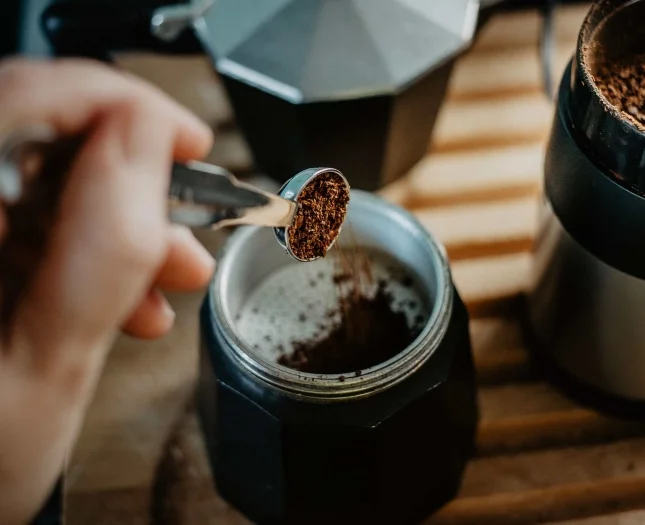
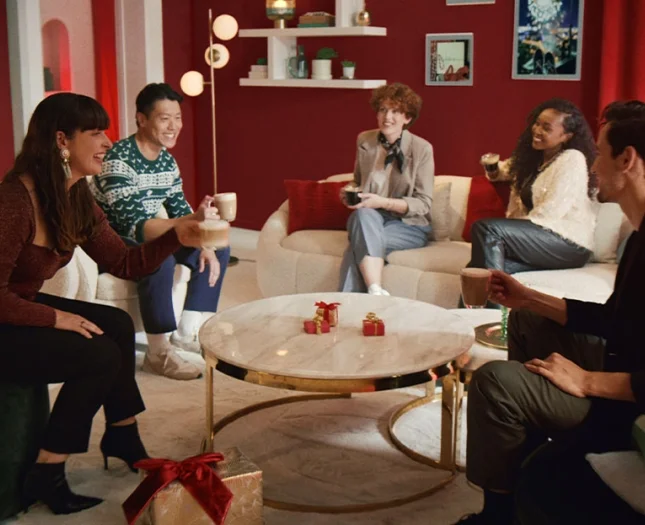

KOFFIE ARTIKELEN
Welkom bij alles over koffie
Lees alles over de bereiding van onze koffie
Heb jij al je favoriete Starbucks® At Home product gevonden? Waarom breid je jouw kenns van alles wat met koffie te maken heeft niet uit? Pak een kopje koffie en geniet van onze verhalen over de reis van koffie, ambacht, duurzaamheid en lifestyle.
De reis van koffie
Duurzaamheid
C.A.F.E. Practices
3 min
De basis van het ethische inkoopbenadering van Starbucks® bij het kopen van koffie zijn de Coffee and Farmer Equity (C.A.F.E.) Practices.
Lees artikelDuurzaamheid van koffie
7 min
Maak kennis met enkele agronomen en boeren die zich inzetten voor duurzame koffie, zodat jij altijd van jouw koffie kunt genieten, nu en in de toekomst.
Lees artikelKoffietips
Varieer met de ijsblokjes van je ijskoffie
5 min
Een extra touch aan jouw ijskoffie
5 min
Coole tips om zelf ijskoffie te maken
5 min
Over Starbucks
Ambacht
De kunst van blenden en branden
4 min
Het brandingsspectrum
4 min
Hoe proef je koffie?
7 min
lifestyle
4 min
Hoe je geniet van koffie
Koffie is een bijzonder dagelijks ritueel - een die zorg en aandacht verdient. Even tot rust komen en genieten van een rustig, opbeurend moment.
Lees artikel4 min
Koffie met vrienden
Wat de gelegenheid ook is, koffie zetten voor gasten is altijd een goed idee. Maak jouw favoriete Starbucks®-koffie voor vrienden, familie of collega's.
Lees artikel